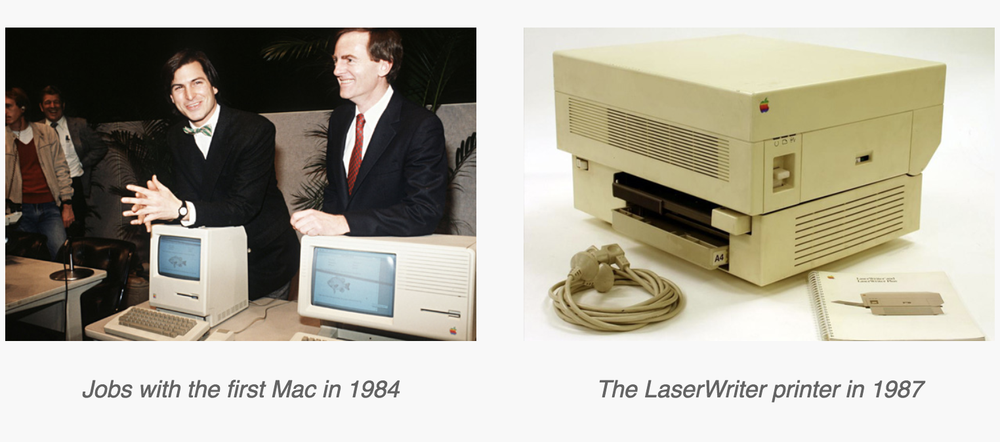

I conducted this article based on the movie I watched month ago (Pirates Of Silicon Valley) and after deep research whilst asking a bunch of Designers why they felt the Mac was the platform of choice in the design industry, I was able to identify several common points of feedback. The Mac has a history dating back to the 80’s where it classically performed as the better design tool. It has been known to render fonts better. It’s had a superior user experience for years. And finally, it’s consistent, well-made, and good looking. But perhaps most important of all, Mac and Windows users alike all agreed that today, there isn’t much of a difference. It’s all come down to a matter of personal preference.
We see them everywhere. Studios, Universities, tech Companies. Being used by visual designers, illustrators, UX/UI designers,Multimedia designers,Graphic designers,etc. No matter where you go and no matter what kind of design you practice, Macs are commonly heralded as the tool of choice. But why is that? What exactly has afforded the Mac this coveted title? I set out to find the answers to those questions by directly asking a bunch of designers why they think the Mac has been positioned as the superior tool. What I ended up with was a mix of hilarious, honest, and insightful commentary.
This was the first and most common answer that I received. It all started in the 1980’s. The race to develop a usable personal computer was under way and by 1984, Apple answered the call with the first Macintosh, which was accompanied by one of the strongest marketing campaigns in history. The Macintosh sold well, users loved it’s GUI (Graphical User Interface), and companies loved it’s desktop publishing abilities. In fact, it has been suggested that through leveraging PostScript, PageMaker, and the LaserWriter, Apple were effectively responsible for creating the desktop publishing industry as a whole.
By the early 1990’s, Apple had cornered the premium and consumer markets. With the release of System 7, they brought color to the user interface and introduced new networking capabilities. It would remain as the architectural basis for the Mac OS through 2001. As Apple continued to create a more design-centric product and OS, software companies followed suit and started producing design software exclusively for Macs. In fact, Adobe products were originally only available on the Mac. This further reinforced the necessity for designers to use Macs, especially as studios and universities continued to become “Mac only” operations. The Mac was developed for designers, the design software was developed for the Mac, and the designer was trained to design on the Mac.
Font Rendering
From a design perspective, the Mac has classically been better at rendering fonts. Whether or not that’s still an issue today is up for debate. But in the past, Microsoft and Apple took somewhat different approaches to how they chose to render fonts, and it made a pretty big impression on designers. The basic idea is that Windows renders for readability (resulting in a sharper type style), while Mac OS renders for visual appearance (resulting in style more similar to what you might see on a printed page). The Mac was also the first computer with multiple typefaces built into the OS.

In more recent times, Apple has demonstrated the desire to include classic typefaces in their OS, while Microsoft has continually commissioned “knock-off” typefaces like Arial (from Helvetica) and Segoe (from Frutiger). In this respect, the designers that I spoke with felt that Apple has always seemed to respect the design community more than Microsoft.
User Experience
Apple’s System 7 (released in May of 1991) was considered to be much more user friendly than Microsoft’s Windows 3.1 (released in April of 1992). It included a drastically improved user interface and functionalities, which were developed through UX processes that Apple was putting into place before most companies even knew what UX was. A famous occurrence of this was the “Pink and Blue” meeting that Apple managers held in March of 1988, shortly after the release of System 6. In this brainstorming session, ideas were written on index cards; features that seemed simple enough to implement in the short term (like adding color to the user interface) were written on blue cards, longer-term goals (like true multitasking) were written on pink cards, and “far out” ideas (like an object-oriented file system) were written on red cards. This began Apple’s high level task prioritization for System 7. It is no surprise that these early UX practices were present in the development of a system that was respected for it’s User Experience.

In more recent years, designers have fallen in love with smaller features that conform really well to design workflows and assist them in accomplishing their tasks with ease. An excellent example of this is the Mission Control functionality (formerly known as Exposé). It was first previewed in 2003, and more than 10 years later, it continues to be a core component of the Mac product. Apple also maintains a really nice gesture and short-key suite, which is seamless across their different products, yielding an extremely intuitive and predictable experience. One of the smallest yet most impactful features that I came across, however, was the fact that .PSD files (Photoshop Documents) can be previewed in the file thumbnails. This is not available “out of the box” with Windows, but it’s a massive timesaver for designers.
Beyond the software developed by Apple, it has also been noted that even third party apps seem to be more user friendly on the Mac. Apps that are exclusive to the Mac, like Sketch, Skala Preview, and Affinity Designer, have all been cited as excellent examples of third party software with great UX. And in some cases, like that of Sketch, the Mac exclusive software is critical to the designers workflow. Many UX teams depend on Sketch during their mockup phase, citing that they’re happy to use it because “it was created by people who put a lot of thought and care into their work.”
They’re Consistent and Pretty
Designers tend to appreciate Apple’s business model, where they build not only an operating system, but also the hardware that runs it. This allows for a truly seamless experience, where Apple controls what happens to the user from their first interaction to their last. Microsoft doesn’t have this luxury and it sometimes results in a total disconnect between the tangible product and the intangible software, where two companies with conflicting priorities, philosophies, and even target audiences, could both be working together on one product.

For me it’s not just about the specs and numbers, it’s about the object itself. It’s about the beautiful hardware and the way it works in sync with the software. Think of how much better Apple trackpads are than Windows PC trackpads. It’s because it comes from one company rather than Microsoft making the OS, Synaptic making the drivers, and whoever building the hardware.
The designers that I spoke to also weren’t afraid to tell me that Apple simply creates a sexy product and they appreciate that. Steve Jobs’ love for simplicity resulted in a kind of aesthetic that revolutionized the way we think about design. Meticulous attention to detail in every way. That can still be seen in the Apple products of today.
Honestly now I think it’s just because Apple has a higher quality for aesthetic. I’m a designer and I enjoy the design of Macs more.
Personal Preference
Perhaps the most universal point of feedback that I got, however, was that in today’s day and age, there are no longer any major differentiating factors between the Mac and the Windows PC. Apple and Microsoft patrons alike were able to agree that it all really comes down to a matter of personal preference. Granted, there are some observable trends, like the fact that designers feel more at home on Macs while developers feel more at home on PCs. Many love one or the other, but can’t really articulate why. They just do. Plenty of critics have cited status, fashionability, and price point as driving factors behind the different platforms. But from a standpoint of core capabilities, they really aren’t that different. You can design a great site on a PC just as well as you can develop a great site on a Mac. What matters now is which platform you prefer to work with.